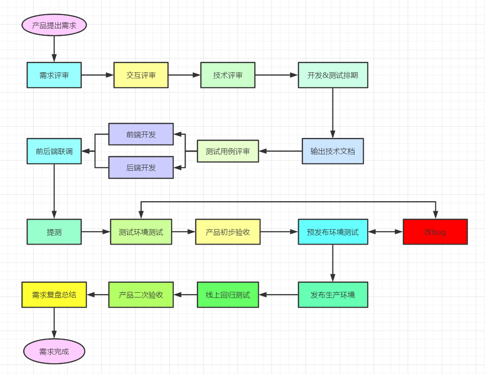
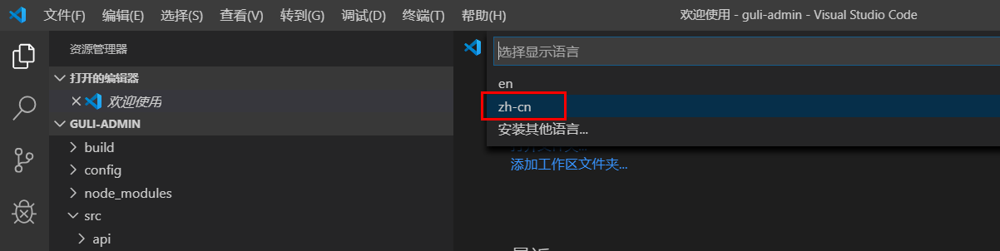
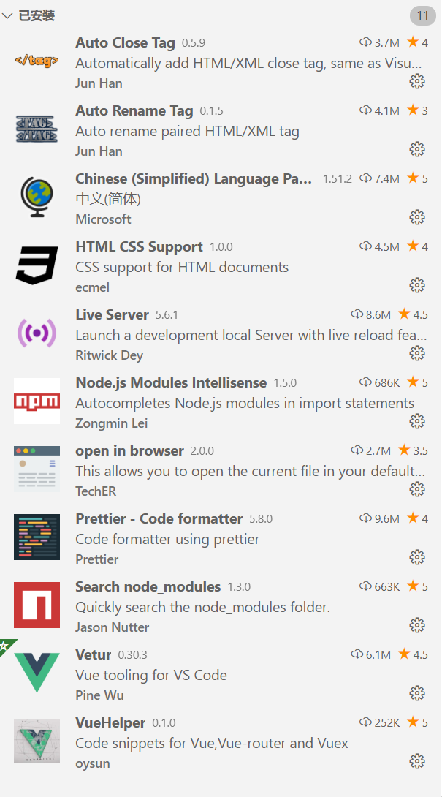
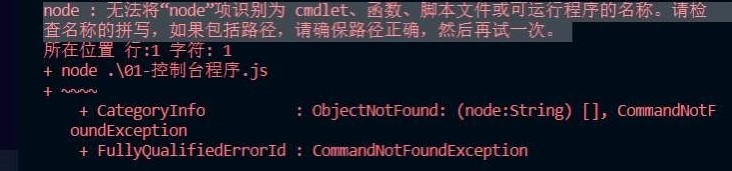
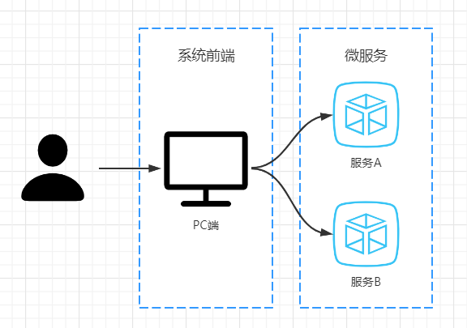
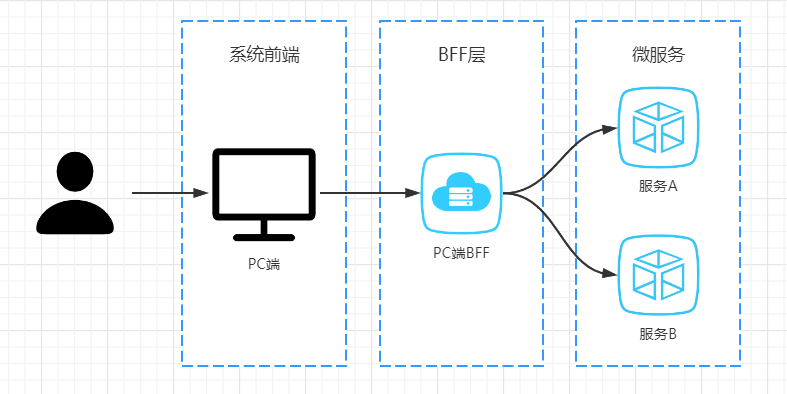
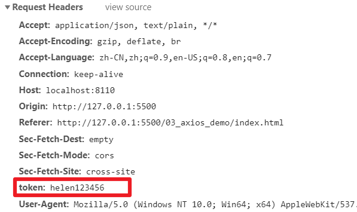
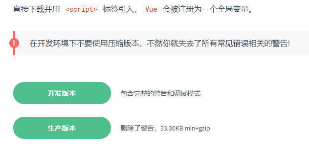

Part04-前端知识¶
00-前端开发和前端开发工具¶
一、软件开发流程¶
最初所有的开发工作都是由后端工程师完成的，随着业务越来越繁杂，工作量变大，于是我们将项目中的可视化部分和一部分交互功能的开发工作剥离出来，形成了前端开发。
大约从2005年开始正式的前端工程师角色被行业所认可，到了2010年，互联网开始全面进入移动时代，前端开发的工作越来越重要。

二、VS Code¶
1、下载和安装¶
https://code.visualstudio.com/Download
**2、配置**中文插件¶
- 首先安装中文插件：Chinese (Simplified) Language Pack for Visual Studio Code
- 右下角弹出是否重启vs，点击“yes”
- 有些机器重启后如果界面还是英文，则 点击 左边栏Manage -> Command Paletet...【Ctrl+Shift+p】
- 在搜索框中输入“configure display language”，回车
- 选择 zh-cn

3、其他插件安装¶
为方便后续开发，建议安装如下插件

4、设置字体大小¶
左边栏 管理-> 设置-> 搜索 “font” -> Font size
5、其他设置¶
vscode配置信息
{
"editor.fontSize": 14,
"editor.tabSize": 2,
"editor.defaultFormatter": "esbenp.prettier-vscode",
"editor.formatOnSave": true,
"prettier.semi": false,
"prettier.singleQuote": true,
"workbench.colorTheme": "Default Light+",
}
01-Node.js入门¶
一、Node.js的概念¶
1、JavaScript引擎¶
浏览器的内核包括两部分核心：
- DOM渲染引擎
- JavaScript解析引擎
创建文件夹01-Node_demo，
案例：dom引擎和js引擎.html
<!DOCTYPE html>
<html lang="en">
<head>
<meta charset="UTF-8" />
<meta name="viewport" content="width=device-width, initial-scale=1.0" />
<title>Document</title>
</head>
<body>
<!-- Dom渲染引擎会将html元素渲染成相应的表现形式 -->
<h1>Hello Node.js</h1>
<!-- JavaScript解析引擎会在浏览器中解析并执行JavaScript代码 -->
<script>
alert('hello Node.js')
</script>
</body>
</html>
2、什么是Node.js¶
脱离浏览器环境也可以运行JavaScript，只要有JavaScript引擎就可以。
Node.js内置了Chrome的
V8 引擎，可以在Node.js环境中直接运行JavaScript程序：
- Node.js没有浏览器API，即document，window的等。
- 增加了许多Node.js 专属API，例如文件系统，进程，http功能。
二、下载和安装¶
1、下载和安装¶
LTS：长期支持版本（推荐下载）
Current：最新版
2、查看安装是否成功¶
查看版本，如果输出版本号则安装成功
node -v
三、初始Node.js程序¶
1、运行一个程序¶
案例：01-hello-node.js
console.log('Hello Node.js')
打开命令行终端：Ctrl + ~
进入到程序所在的目录，输入
node 01-hello-node.js
常见问题¶
如果安装Node.js之前已经打开了VS Code，则会看到如下错误
解决方案：重启VSCode或者重启你的电脑

2、文件的读取¶
案例：02-read-file.js
// 引入Node.js文件系统模块：
// fs是Node.js自带的模块，使用Node.js中的关键字require将模块引入，使用const定义模块常量
const fs = require('fs')
//调用readFile方法读取磁盘文件：异步操作
fs.readFile('./他.txt', function (err, data) {
//当文件读取失败时，可以获取到err的值，输出错误信息
if (err) throw err
//当文件读取成功时，可以获取到data的值，输出响应的内容
console.log(data.toString())
})
console.log('读取文件')
3、服务器端程序¶
案例：03-node-server.js
//引入Node.js的http模块：
const http = require('http')
//调用createServer创建服务器
http.createServer(function (request, response) {
// 发送 HTTP 头部
// HTTP 状态值: 200 : OK
// 内容类型: text/plain
response.writeHead(200, { 'Content-Type': 'text/html' })
// 发送响应数据 "Hello World"
response.end('<h1>Hello Node.js Server</h1>')
}).listen(8888) //调用listen方法在8888端口监听客户端请求
// 终端打印如下信息
console.log('Server running at http://127.0.0.1:8888/')
三、Node.js的作用¶
1、Node.js的应用场景¶
-
如果你是一个前端程序员，想开发类似JavaWeb的简单后端程序，那么Node.js是一个非常好的选择。
-
如果你是一个架构师，想部署一些高性能的服务，那么Node.js也是一个非常好的选择。
-
- 通常他会被用来作一个BFF层，即 Backend For Frontend（服务于前端的后端），通俗的说是一个专门用于为前端业务提供数据的后端程序。
2、BFF 解决什么问题¶
一个前端页面向 服务A 和 服务B 发送请求，不同的微服务返回的值用于渲染页面中不同的组件。此时，所有的数据在PC端浏览器渲染。

我们可以使用一个BFF层提前将页面渲染好，发送给浏览器，那么BFF层可以提前将多个服务的数据聚合起来。

02-ECMAScript 6 简介¶
一、ECMAScript¶
1、ECMA¶
ECMA（European Computer Manufacturers Association）中文名称为欧洲计算机制造商协会，这个组织的目标是评估、开发和认可电信和计算机标准。1994 年后该组织改名为 Ecma 国际。
2、ECMAScript¶
ECMAScript 是由 Ecma 国际通过 ECMA-262 标准化的脚本程序设计语言。
3、什么是 ECMA-262¶
Ecma 国际制定了许多标准，而 ECMA-262 只是其中的一个
4、ECMA-262 历史¶
ECMA-262（ECMAScript）历史版本查看网址
http://www.ecma-international.org/publications/standards/Ecma-262-arch.htm
| 第 1 版 | 1997 年 | 制定了语言的基本语法 |
|---|---|---|
| 第 2 版 | 1998 年 | 较小改动 |
| 第 3 版 | 1999 年 | 引入正则、异常处理、格式化输出等。IE 开始支持 |
| 第 4 版 | 2007 年 | 过于激进，未发布 |
| 第 5 版 | 2009 年 | 引入严格模式、JSON，扩展对象、数组、原型、字符串、日期方法 |
| 第 6 版 | 2015 年 | 模块化、面向对象语法、Promise、箭头函数、let、const、数组解构赋值等等 |
| 第 7 版 | 2016 年 | 幂运算符、数组扩展、Async/await 关键字 |
| 第 8 版 | 2017 年 | Async/await、字符串扩展 |
| 第 9 版 | 2018 年 | 对象解构赋值、正则扩展 |
| 第 10 版 | 2019 年 | 扩展对象、数组方法 |
| ES.next |
5、ECMAScript 和 JavaScript 的关系¶
一个常见的问题是，ECMAScript 和 JavaScript 到底是什么关系？
要讲清楚这个问题，需要回顾历史。1996 年 11 月，JavaScript 的创造者 Netscape 公司，决定将 JavaScript 提交给标准化组织 ECMA，希望这种语言能够成为国际标准。次年，ECMA 发布 262 号标准文件（ECMA-262）的第一版，规定了浏览器脚本语言的标准，并将这种语言称为 ECMAScript，这个版本就是 1.0 版。
因此，ECMAScript 和 JavaScript 的关系是，前者是后者的规格，后者是前者的一种实现（另外的 ECMAScript 方言还有 Jscript 和 ActionScript）
二、基本语法¶
ES6相对之前的版本语法更严格，新增了面向对象的很多特性以及一些高级特性。本部分只学习项目开发中涉及到ES6的最少必要知识，方便项目开发中对代码的理解。
1、let声明变量¶
创建文件夹02-ES6-demo，创建 01-let.js
//声明变量
let a
let b,c,d
let e = 100
let f = 521, g = 'iloveyou', h = []
//1. 变量不能重复声明
let name = 'Helen'
let name = '环'//报错：SyntaxError: Identifier 'name' has already been declared
//2. 存在块儿级作用域
// if else while for
{
let star = 5
}
console.log(star)//报错：star is not defined
//3. 不存在变量提升
console.log(song)//报错：Cannot access 'song' before initialization
let song = '依然爱你';
2、const声明常量¶
创建 02-const.js
//声明常量
const SCHOOL = '尚硅谷'
//1. 一定要赋初始值
const A//报错：SyntaxError: Missing initializer in const declaration
//2. 一般常量使用大写(潜规则)
const a = 100
//3. 常量的值不能修改
SCHOOL = 'ATGUIGU'//报错：TypeError: Assignment to constant variable.
console.log(PLAYER)//报错：ReferenceError: PLAYER is not defined
//4. 对于数组和对象的元素修改, 不算做对常量的修改, 不会报错
const TEAM = ['康师傅','海狗人参丸','雷神','阳哥']
TEAM.push('环') //常量只想的地址不变，不会报错
TEAM = 100 //报错：TypeError: Assignment to constant variable.
3、解构赋值¶
创建 03-解构赋值.js
//ES6 允许按照一定模式从数组和对象中提取值，对变量进行赋值，
//这被称为解构赋值。
//1. 数组的解构
const F4 = ['小沈阳','刘能','赵四','宋小宝']
let [xiao, liu, zhao, song] = F4
console.log(xiao)
console.log(liu)
console.log(zhao)
console.log(song)
//2. 对象的解构
const zhao = {
name: '赵本山',
age: '不详',
xiaopin: function(){
console.log("演小品");
}
}
let {name, age, xiaopin} = zhao
console.log(name)
console.log(age)
console.log(xiaopin)
xiaopin()
//3. 根据名字自动解构
// let {xiaopin} = zhao
// xiaopin()
4、模板字符串¶
创建 04-模板字符串.js
模板字符串相当于加强版的字符串，用反引号 `，除了作为普通字符串，还可以用来定义多行字符串，还可以在字符串中加入变量和表达式。
// ES6 引入新的声明字符串的方式 『``』 '' ""
//1. 声明
let str = `我也是一个字符串哦!`
console.log(str, typeof str)
//2. 内容中可以直接出现换行符
let list = `<ul>
<li>沈腾</li>
<li>玛丽</li>
<li>魏翔</li>
<li>艾伦</li>
</ul>`
//3. 变量拼接
let lovest = '贾玲'
let out = `我喜欢${lovest}`
console.log(out)
5、声明对象简写¶
创建 05-声明对象简写.js
let name = 'Tom'
let age = 2
let sing = function () {
console.log('I love Jerry')
}
// 传统
let person1 = {
name: name,
age: age,
sing: sing,
}
console.log(person1)
person1.sing()
// ES6：这样的书写更加简洁
let person2 = {
age,
name,
sing,
}
console.log(person2)
person2.sing()
6、定义方法简写¶
创建 06-定义方法简写.js
// 传统
let person1 = {
sayHi: function () {
console.log('Hi')
},
}
person1.sayHi()
// ES6
let person2 = {
sayHi() {
console.log('Hi')
},
}
person2.sayHi()
7、参数的默认值¶
注意：函数在JavaScript中也是一种数据类型，JavaScript中没有方法的重载
创建 07-参数的默认值.js
//ES6 允许给函数参数赋值初始值
//1. 形参初始值 具有默认值的参数
function add(a, b, c = 0) {
return a + b + c
}
let result = add(1, 2)
console.log(result)
//2. 与解构赋值结合
function connect({ host = '127.0.0.1', username, password, port }) {
console.log(host)
console.log(username)
console.log(password)
console.log(port)
}
connect({
host: 'atguigu.com',
username: 'root',
password: 'root',
port: 3306,
})
8、对象拓展运算符¶
创建 08-对象扩展运算符.js
扩展运算符（spread）也是三个点（...）。它好比 rest 参数的逆运算，将一个数组转为用逗号分隔的参数序列，对数组进行解包。
//展开对象(拷贝对象)
let person = { name: '路飞', age: 17 }
// let someone = person //引用赋值
let someone = { ...person } //对拷拷贝
someone.name = '索隆'
console.log(person)
console.log(someone)
9、箭头函数¶
创建 09-箭头函数.js
箭头函数提供了一种更加简洁的函数书写方式。基本语法是：参数 => 函数体``箭头函数多用于匿名函数的定义
//声明一个函数
let fn = function(a){
return a + 100
}
//箭头函数
let fn = (a) => {
return a + 100
}
//简写
let fn = a => a + 100
//调用函数
let result = fn(1)
console.log(result)
10、Promise¶
Promise 是ES6 引入的异步编程的新解决方案。语法上 Promise 是一个构造函数， 用来封装异步操作并可以获取其成功或失败的结果。
创建 10-Promise基本语法.js
const fs = require('fs')
//实例化 Promise 对象：
//Promise对象有三个状态：初始化、成功、失败
const p = new Promise((resolve, reject) => {
//调用readFile方法读取磁盘文件：异步操作
fs.readFile('./他.txt', (err, data) => {
//当文件读取失败时，可以获取到err的值
if (err) reject(err) //reject将Promise对象的状态设置为失败
//当文件读取成功时，可以获取到data的值
resolve(data) //resolve将Promise对象的状态设置为成功
})
})
//调用 promise 对象的方法
//then：当 Promise状态成功时执行
//catch：当 Promise状态失败时执行
p.then(response => {
console.log(response.toString())
}).catch(error => {
console.log('出错了')
console.error(error)
})
总结：借助于Promise，可以使异步操作中的成功和失败的处理函数独立出来。
03-axios¶
一、axios入门¶
1、axios的作用¶
Axios 是一个基于 promise 的 HTTP 库，可以用在浏览器和 node.js 中。
2、axios应用案例¶
**step1：**启动srb_core微服务
**step2：**创建03-axios-demo文件夹
**step3：**复制axios.js至文件夹
**step4：**创建index.html
<!DOCTYPE html>
<html lang="en">
<head>
<meta charset="UTF-8">
<meta name="viewport" content="width=device-width, initial-scale=1.0">
<title>Document</title>
</head>
<body>
<script src="axios.js"></script>
<script>
//基于promise
axios({
method:'get',
url:'http://localhost:8110/admin/core/integralGrade/list'
}).then(response => {
console.log('获取数据成功', response)
}).catch(error => {
console.log('获取数据失败', error)
})
//简写
//axios.get('http://localhost:8110/admin/core/integralGrade/list').
</script>
</body>
</html>
二、跨域¶
¶
1、为什么会出现跨域问题？¶
出于浏览器的同源策略限制。
所谓同源（即指在同一个域）就是两个地址具有相同的协议（protocol）、主机（host）和端口号（port）
以下情况都属于跨域：
| 跨域原因说明 | 示例 |
|---|---|
| 域名不同 | www.jd.com 与 www.taobao.com |
| 域名相同，端口不同 | www.jd.com:8080 与 www.jd.com:8081 |
| 二级域名不同 | item.jd.com 与 miaosha.jd.com |
http和https也属于跨域。
如果域名和端口都相同，但是请求路径不同，不属于跨域，如：www.jd.com/item 和 www.jd.com/goods
同源策略会阻止一个域的javascript脚本和另外一个域的内容进行交互。
而我们刚才是从localhost:5500端口去访问localhost:8110端口，这属于端口不同，跨域了。
2、解决跨域问题¶
Spring早就给我们提供了解决方案，我们只需要在对应controller上添加一个注解就可以了
我们在 AdminIntegralGradeController 类上添加跨域标签@CrossOrigin，再进行测试，则测试成功！
@CrossOrigin //解决跨域问题
三、自定义配置¶
1、配置axios实例¶
可以对axios进行配置，简化代码的编写
//使用自定义配置
const request = axios.create({
baseURL: 'http://localhost:8110', //url前缀
timeout: 1000, //超时时间
headers: {'token': 'helen123456'} //携带令牌
})
2、配置请求参数¶
这样，远程接口的url地址就可以修改成相对路径了
//基于promise
request({
method:'get',
url:'/admin/core/integralGrade/list'
}).then(response => {
console.log('获取数据成功', response)
}).catch(error => {
console.log('获取数据失败', error)
})
四、拦截器¶
在请求或响应被 then 或 catch 处理前拦截他们。
1、请求拦截器¶
在发送axios请求前，可以拦截请求，对请求做一些处理
// 请求拦截器
request.interceptors.request.use(
function (config) {
// 在发送请求之前做些什么，例如：在请求头中携带一个令牌
config.headers.token = 'helen123456'
return config
},
function (error) {
// 对请求错误做些什么
return Promise.reject(error)
}
)
发送请求时，在请求头中会携带这个token

2、响应拦截器¶
在发送完请求，获取到响应后，可以对响应做一些处理，再返回给前端用户
// 添加响应拦截器
request.interceptors.response.use(
function (response) {
// 对响应数据做点什么，例如：使用response.data替代response，简化前端拿到的数据结果
return response.data
},
function (error) {
// 对响应错误做点什么
return Promise.reject(error)
}
)
04-Vue.js入门¶
一、Vue.js的基本认识¶
1、官网¶
英文官网：https://vuejs.org
中文官网：https://cn.vuejs.org
2、简介¶
渐进式JavaScript 框架（核心 + 扩展）
作者：尤雨溪(一位华裔前 Google 工程师)
作用：动态构建用户界面
3、优点¶
体积小：压缩后33K
更高的运行效率：基于虚拟dom
双向数据绑定：不操作dom，关注业务逻辑
生态丰富、学习成本低：入门容易，学习资料多
二、第一个Vue应用¶
1、引入脚本库¶

创建文件夹04-vue，复制vue.js，创建 01_hello.html，创建